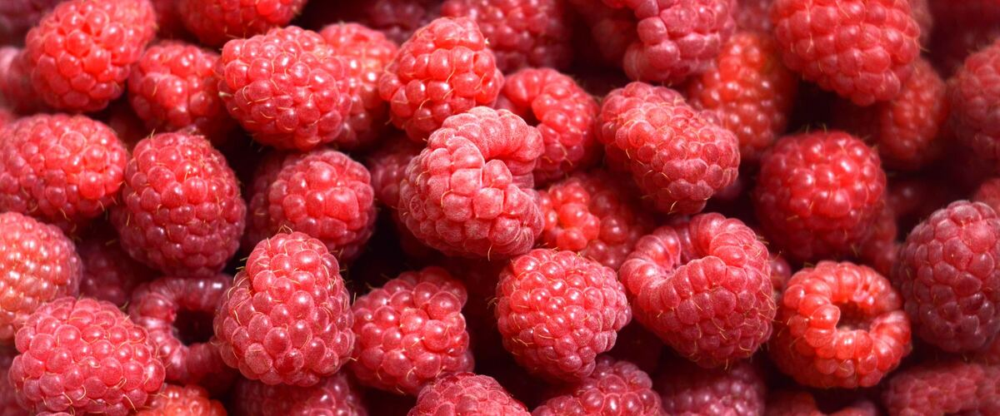

When to plant raspberries in Eugene, OR
Plant raspberry canes in Eugene Mar 15 – Apr 26.
Why these dates
Eugene's typical last spring frost is April 11. As a hardy perennial, this crop doesn't need to wait for that date. In the west-side valleys, though, the soil usually isn't ready to work until about March 15.
West-side valleys. The Willamette Valley, Puget Sound and southern Oregon valleys. Long frost-free seasons, but soil stays cold and wet into May, so warm crops wait for warm soil, not just the last frost.
- Difficulty
- Moderate
- Sun
- Full sun
- Spacing
- 2 to 3 feet apart in rows
- Planting depth
- Roots covered by 2 to 3 inches of soil
- Frost
- Hardy perennial; comes back every year
- First harvest
- Light crop in year two (fall-bearers can fruit the first fall)
Step by step
- Pick a sunny spot with soil that drains well, and mix in an inch or two of compost.
- Plant raspberry canes Mar 15 – Apr 26, 2 to 3 feet apart in rows. Roots covered by 2 to 3 inches of soil.
- Set up a simple trellis with posts and wire. After harvest, cut spent canes to the ground.
- Harvest: Pick when berries slip easily off the core. Check every two or three days in season.
Varieties that do well here
- Meeker (a Northwest favorite)
- Tulameen
- Heritage (fall-bearing)
- Cascade Delight
Watch out for
Root rot in soggy soil. Plant in a raised row or a bed that drains well.
Need well-drained soil; they die in soggy ground. A raised row helps in wet Northwest winters. West of the Cascades, fall planting works well too.
Common questions
When is the last frost in Eugene, OR?
Typically April 11. In 9 years out of 10, frost is over by May 9. These are 1991–2020 NOAA climate normals for Eugene Mahlon Sweet Airport.
Is it too late to plant raspberries in Eugene?
The spring planting window runs through April 26. Potted plants can still go in later if you water them faithfully through their first summer. Fall planting also works well here.
How long until I can pick raspberries?
Light crop in year two (fall-bearers can fruit the first fall). Pick when berries slip easily off the core. Check every two or three days in season.
Also plant in Eugene around the same time
Planting dates for raspberries in nearby areas
- Portland, OR Mar 15 – Apr 26
- Gresham, OR Mar 15 – Apr 26
- Wilsonville and Canby, OR Mar 15 – Apr 26
- Salem, OR Mar 15 – Apr 26
- Roseburg, OR Mar 15 – Apr 26
- Medford, OR Mar 15 – Apr 26
Full planting calendar for Eugene · Raspberries in every city